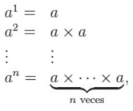

⭐⭐ Crear una función calcular potencia que reciba como parámetro base y exponente y devuelva el resultado.
Se llama potencia a una expresión de la forma a^n, donde a es la base y n es el exponente.

Cuando el exponente es un número natural n, este indica las veces que aparece a multiplicado por sí mismo, siendo a un número cualquiera